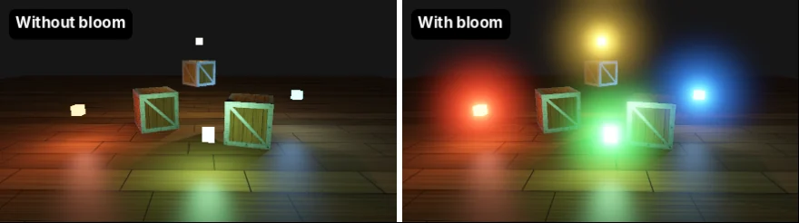

Illuminazione avanzata
Bloom#
examples/Sources/15-HDRBloom, si esegue con swift run HDRBloom. Scarica tutti gli esempi oppure guarda come eseguirli.A monitor cannot show a light as blindingly bright as it would be in reality. What we can do is imitate what bright lights do in a camera or in the eye: their glow bleeds over the surrounding image. This effect is bloom, and it is one of the cheapest ways to make a scene feel luminous.
The recipe has three steps:
- Extract the bright parts of the HDR scene into a separate texture.
- Blur that texture.
- Add the blurred result on top of the scene, then tone map.
Extracting bright areas#
We could run a pass over the scene texture to pick out bright pixels. A neater way is to let the scene's fragment function write to two color attachments at once, which is called multiple render targets (MRT):
struct SceneOut {
float4 color [[color(0)]];
float4 bright [[color(1)]];
};
fragment SceneOut fragment_main(VertexOut in [[stage_in]], ...) {
float3 lit = /* lighting as before */;
SceneOut out;
out.color = float4(lit, 1.0);
float brightness = dot(lit, float3(0.2126, 0.7152, 0.0722));
out.bright = brightness > 1.0 ? float4(lit, 1.0) : float4(0, 0, 0, 1);
return out;
}
A threshold of 1.0 only makes sense because the scene is rendered in HDR: only pixels brighter than display white glow. Give the render pass and the pipeline a second attachment:
scenePass.colorAttachments[1].texture = brightTexture
scenePass.colorAttachments[1].loadAction = .clear
scenePass.colorAttachments[1].storeAction = .store
pipelineDescriptor.colorAttachments[1].pixelFormat = .rgba16Float
scenePass->colorAttachments()->object(1)->setTexture(brightTexture);
scenePass->colorAttachments()->object(1)->setLoadAction(MTL::LoadActionClear);
scenePass->colorAttachments()->object(1)->setStoreAction(MTL::StoreActionStore);
pipelineDescriptor->colorAttachments()->object(1)->setPixelFormat(MTL::PixelFormatRGBA16Float);
Every pipeline used in that pass must declare both attachments. A fragment function that should not write to one of them, such as the lamp shader, can leave it out of its output struct; with writeMask = [] on the attachment you can also disable writes explicitly.
Gaussian blur#
A Gaussian blur averages each pixel with its neighbors, weighted by a bell curve. A two-dimensional kernel of 9 × 9 would cost 81 samples per pixel. The Gaussian is separable: blurring horizontally and then vertically gives the identical result with 9 + 9 samples.
struct BlurUniforms {
float2 direction; // (1, 0) or (0, 1)
};
fragment float4 fragment_blur(ScreenOut in [[stage_in]],
constant BlurUniforms &uniforms [[buffer(0)]],
texture2d<float> image [[texture(0)]],
sampler s [[sampler(0)]]) {
const float weights[5] = { 0.227027, 0.1945946, 0.1216216, 0.054054, 0.016216 };
float2 texel = uniforms.direction / float2(image.get_width(), image.get_height());
float3 result = image.sample(s, in.uv).rgb * weights[0];
for (int i = 1; i < 5; i++) {
result += image.sample(s, in.uv + texel * float(i)).rgb * weights[i];
result += image.sample(s, in.uv - texel * float(i)).rgb * weights[i];
}
return float4(result, 1.0);
}
Ping-pong#
A pass cannot read from the texture it is writing to, so the blur alternates between two textures: A to B horizontally, B to A vertically, and again for a stronger blur.
var source = brightTexture!
for i in 0..<10 {
let horizontal = i % 2 == 0
let target = horizontal ? blurTextureA! : blurTextureB!
let pass = MTLRenderPassDescriptor()
pass.colorAttachments[0].texture = target
pass.colorAttachments[0].loadAction = .dontCare
pass.colorAttachments[0].storeAction = .store
let encoder = commandBuffer.makeRenderCommandEncoder(descriptor: pass)!
encoder.setRenderPipelineState(blurPipelineState)
var uniforms = BlurUniforms(direction: horizontal ? [1, 0] : [0, 1])
encoder.setFragmentBytes(&uniforms, length: MemoryLayout<BlurUniforms>.stride, index: 0)
encoder.setFragmentTexture(source, index: 0)
encoder.setFragmentSamplerState(clampSampler, index: 0)
encoder.drawPrimitives(type: .triangle, vertexStart: 0, vertexCount: 3)
encoder.endEncoding()
source = target
}
MTL::Texture* source = brightTexture;
for (int i = 0; i < 10; i++) {
bool horizontal = i % 2 == 0;
MTL::Texture* target = horizontal ? blurTextureA : blurTextureB;
MTL::RenderPassDescriptor* pass = MTL::RenderPassDescriptor::alloc()->init();
pass->colorAttachments()->object(0)->setTexture(target);
pass->colorAttachments()->object(0)->setLoadAction(MTL::LoadActionDontCare);
pass->colorAttachments()->object(0)->setStoreAction(MTL::StoreActionStore);
MTL::RenderCommandEncoder* encoder = commandBuffer->renderCommandEncoder(pass);
encoder->setRenderPipelineState(blurPipelineState);
BlurUniforms uniforms{horizontal ? simd::float2{1, 0} : simd::float2{0, 1}};
encoder->setFragmentBytes(&uniforms, sizeof(BlurUniforms), 0);
encoder->setFragmentTexture(source, 0);
encoder->setFragmentSamplerState(clampSampler, 0);
encoder->drawPrimitives(MTL::PrimitiveTypeTriangle, NS::UInteger(0), NS::UInteger(3));
encoder->endEncoding();
pass->release();
source = target;
}
The load action is .dontCare because the full-screen triangle overwrites every pixel anyway. Skipping the load is free performance on a tile-based GPU.
Combining#
The final pass adds the blurred glow to the scene and then tone maps:
fragment float4 fragment_composite(ScreenOut in [[stage_in]],
texture2d<float> scene [[texture(0)]],
texture2d<float> bloom [[texture(1)]],
sampler s [[sampler(0)]]) {
float3 hdr = scene.sample(s, in.uv).rgb + bloom.sample(s, in.uv).rgb;
float3 mapped = 1.0 - exp(-hdr * 1.0);
return float4(mapped, 1.0);
}
Bloom is added before tone mapping, so the glow is compressed together with everything else.

Doing it better#
Ten full-resolution passes with a small kernel give a tight glow at a high cost. Modern bloom works on a mip chain instead:
- Downsample the bright texture repeatedly, halving the size each time, for five or six levels.
- Walk back up, upsampling each level with a small blur and adding it to the next larger one.
Each level contributes a wider glow, the total cost is around one and a third full-resolution passes, and the result is a broad, smooth halo. This is the approach used in most current engines, and it also removes the need for a hard threshold: blending a small fraction of the blurred chain with the scene looks more natural.
Two Metal-specific shortcuts are worth knowing:
- Metal Performance Shaders ships tuned image filters.
MPSImageGaussianBlur(device:sigma:)blurs a texture with one call:blur.encode(commandBuffer:sourceTexture:destinationTexture:). - A blur can also run as a compute function, which avoids setting up render passes for image processing.
Exercises#
- Change the number of blur iterations and watch the glow widen.
Mostra la soluzione
Each pair of passes widens the blur a little, since repeated Gaussian blurs add up. Two iterations give a tight glow around the lamps; twenty give a wide haze, at twenty times the cost. That cost is the reason for the mip chain approach.
- Run the blur at half resolution and compare the quality and the GPU time.
Mostra la soluzione
Make the two blur textures half the size of the scene. The blur then costs a quarter as much and covers twice the screen distance per pass. Because the glow is smooth, the lower resolution is not visible after the final upsample.
- Implement the downsample and upsample chain.
Mostra la soluzione
Create a chain of textures, each half the size of the previous. Downsample the bright texture into each level with a small filter, then go back up: upsample level n, add it to level n - 1, and repeat to the top. The live demo above uses the texture's own mipmaps as the downsample chain and sums five levels in one pass.